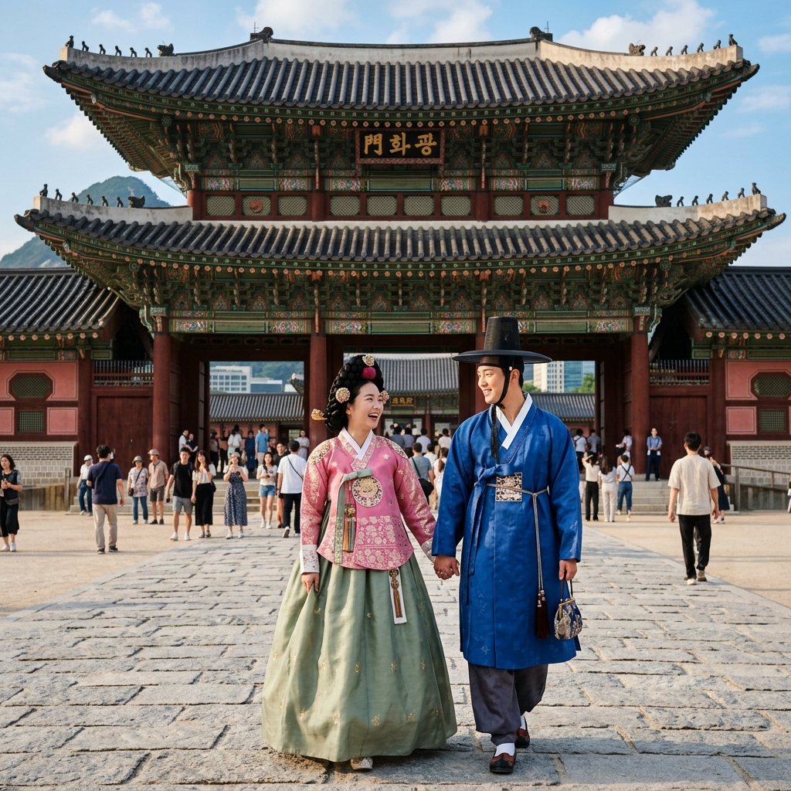
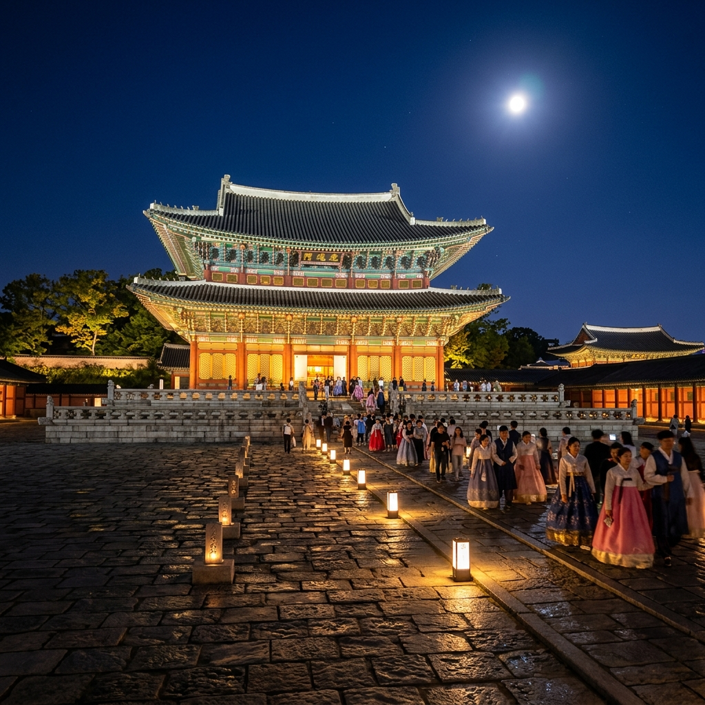
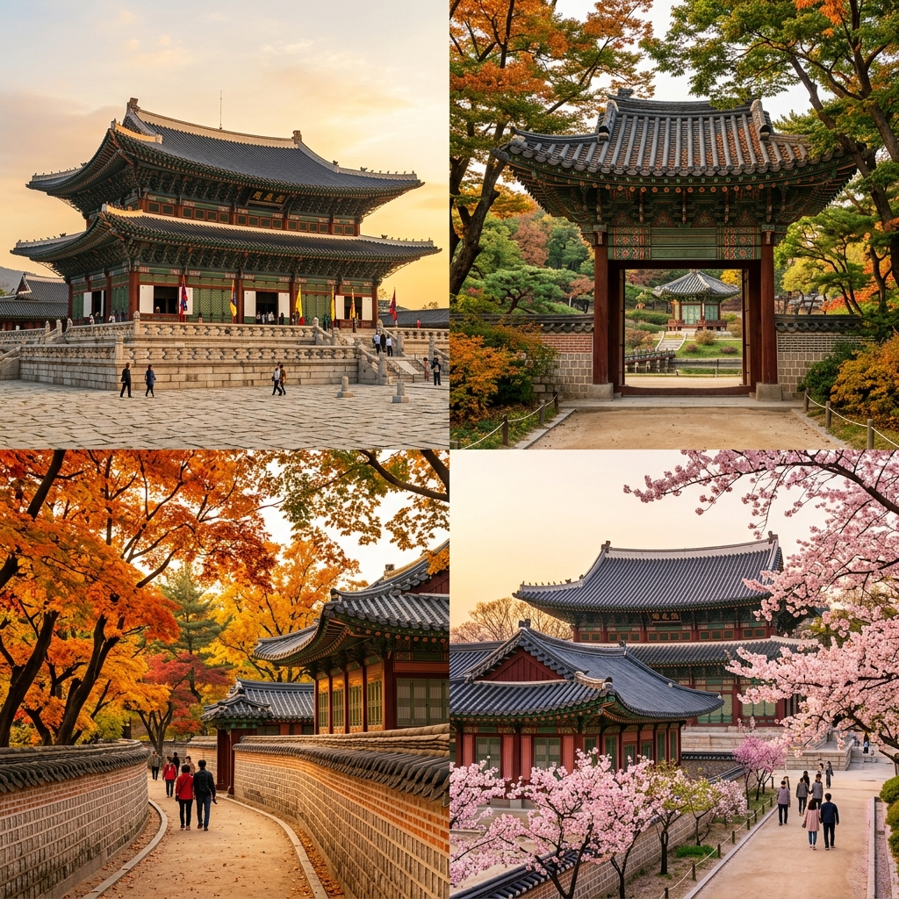

4대궁의 기본 입장료를 먼저 파악해두면 어느 날이 얼마나 이득인지 실감됩니다.
경복궁 입장료는 어른(만 25~64세) 3,000원, 어린이·청소년(만 7~24세)·어르신(만 65세 이상)은 무료입니다. 창덕궁은 어른 3,000원(후원 포함 8,000원), 창경궁 1,000원, 덕수궁 1,000원 수준입니다. 4개 궁 전체를 모두 돌아볼 계획이라면 통합관람권(10,000원)이 유리합니다.
유의할 점은 화요일 정기 휴궁입니다. 경복궁·창경궁·창덕궁 모두 매주 화요일에 문을 닫습니다. 덕수궁은 월요일 휴궁입니다. 일정 계획 시 이 사항을 빠뜨리면 헛걸음이 됩니다.
4대궁·종묘는 한복 착용 시 입장료 전액 면제가 적용됩니다.
기준은 저고리·치마(여성) 또는 저고리·바지(남성) 조합의 전통 한복입니다. 생활한복(개량 한복)도 대부분 인정되지만, 지나치게 캐주얼한 개량 버전은 현장에서 입장이 거부될 수 있습니다. 근처 한복 대여 가게에서 빌려 입는 방식이 가장 안전하며, 경복궁 주변 삼청동·인사동 입구에 대여점이 밀집해 있습니다.
대여 비용은 2~4시간 기준 1만 5,000~3만 원 수준이지만, 성인 2인 기준 입장료 6,000원이 절약되고 사진 촬영 만족도가 월등히 높아져 실질적 가성비가 좋습니다. 궁 내부에서 인생샷 촬영이 목적이라면 반드시 한복 대여를 추천합니다.

매달 마지막 수요일은 문화가있는날로 지정되어 있으며, 이 날 4대궁과 종묘 입장이 무료입니다.
별도 사전예약 없이 당일 매표소에서 무료 입장권을 받으면 됩니다. 단, 창덕궁 후원은 유료 프로그램이므로 후원 탐방 부분은 무료 혜택이 적용되지 않습니다.
문화가있는날은 궁궐 외에도 박물관·미술관 등 다양한 문화시설에서 동시에 혜택이 제공됩니다. 국립고궁박물관(경복궁 내)은 평소에도 무료이므로, 경복궁 문화가있는날 방문과 함께 고궁박물관을 연계하면 하루를 알차게 보낼 수 있습니다.
경복궁 야간개장은 봄·가을에 집중 운영됩니다.
2026년 상반기 야간개장은 5월 13일~6월 14일 기간 중 화·수요일을 제외하고 운영됩니다. 관람 시간은 오후 7시~10시 30분(입장 마감 10시)이며, 입장료는 어른 기준 3,000원입니다. 야간개장은 사전 온라인 예매 필수로, 현장 판매는 없습니다. 티켓은 국립고궁박물관 예매 사이트에서 판매하며 오픈 즉시 매진이 자주 발생합니다.
6월 14일이 상반기 마지막 야간개장일이므로, 이 글을 보고 계신 6월 중순 시점에는 6월 14일 전 남은 날짜를 노려보세요. 저녁 조명 아래 경복궁 광화문과 근정전의 야경은 낮과는 전혀 다른 분위기를 자아냅니다.
경복궁 외에 다른 궁궐의 야간·특별관람 일정도 확인해두면 유용합니다.
창덕궁 달빛기행은 후원을 달빛 아래 걷는 야간 프로그램으로 4~11월 운영됩니다. 소규모 인원(30명 내외)으로 진행되어 예매 경쟁이 치열하며, 국립고궁박물관 홈페이지에서 선착순 예매합니다. 요금은 성인 기준 3만 원 내외입니다. 덕수궁 돌담길 야간개장은 별도 일정이 있으며, 서울시청 옆 정동길과 연계한 야간 산책 코스로 사랑받습니다. 창경궁은 봄 야간개장(벚꽃 시즌)이 대표적이며, 6월에는 정규 개장만 운영됩니다.

외국인 여행자가 많이 묻는 항목이기도 합니다.
외국인도 위에 설명한 한복 착용, 문화가있는날, 만 65세 이상 조건을 동일하게 적용받습니다. 한복 착용 무료는 외국인에게도 적용되어 실제로 해외 방문객들이 삼청동 한복 대여점에서 한복을 빌려 입고 무료 입장하는 경우가 많습니다. 경복궁·창덕궁 등에서는 한국어·영어·중국어·일본어 해설 오디오가이드를 대여할 수 있으며, 무료 궁궐 해설 투어도 정기적으로 운영됩니다.
경복궁 방문은 주변 볼거리와 묶으면 훨씬 알찬 코스가 됩니다.
경복궁 동문(건춘문) → 국립민속박물관(무료, 경복궁 내) → 삼청동 길(카페·갤러리) → 북촌 한옥마을 산책 → 가회동 골목 → 안국역 귀가 코스가 가장 인기 있는 반나절 코스입니다. 경복궁 야간개장 날에는 광화문 → 경복궁 야간 → 청와대 사랑채(야간 조명) → 광화문 광장으로 이어지는 저녁 산책 코스도 좋습니다. 4대궁이 모두 도보 혹은 지하철 한두 정거장 거리에 몰려 있어, 반일~하루 안에 복수의 궁을 돌아보는 '궁궐 투어'도 충분히 가능합니다.

경복궁·4대궁 방문 전 아래 항목을 체크하면 헛걸음을 방지할 수 있습니다.
① 방문 요일 확인 — 화요일(경복궁·창덕궁·창경궁) 또는 월요일(덕수궁) 방문 금지. ② 야간개장 예매 — 현장 구매 없음, 반드시 사전 온라인 예매. ③ 한복 대여 시간 — 대여점은 보통 오전 9시~오후 5시 영업, 야간개장 날에는 영업 시간 연장 여부 확인. ④ 문화가있는날 날짜 — 매달 마지막 수요일. ⑤ 날씨·복장 — 여름 경복궁은 그늘이 적어 양산·선크림 필수. 신발은 넓은 마당을 많이 걷는 것을 감안해 편한 운동화 권장. ⑥ 국립고궁박물관 — 경복궁 내 위치, 입장 무료, 화요일도 개관. 경복궁 유료 입장 없이 박물관만 방문도 가능.